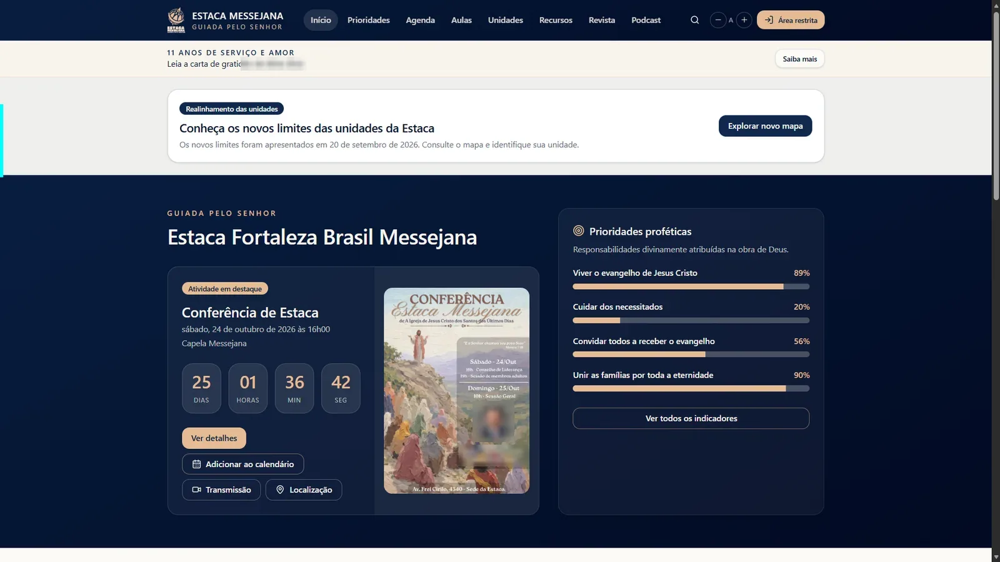

Prioridades e indicadores
Painéis para acompanhar as quatro prioridades proféticas.

Um portal para membros e líderes da Estaca Fortaleza Brasil Messejana encontrarem informações, atividades e recursos, além de consultar o território das unidades.
Clique nas telas para conhecer o portal por dentro.
Informações de uma organização com diferentes unidades ficavam distribuídas entre canais e pessoas. O realinhamento das alas criou uma necessidade imediata de orientar os membros sobre limites, endereços e horários.
Foi criado um portal com agenda, aulas, recursos, revista, indicadores e páginas das unidades. O mapa interativo permite pesquisar um endereço e visualizar os novos limites das cinco alas.
Painéis para acompanhar as quatro prioridades proféticas.
Atividades em lista ou calendário, com detalhes e localização.
Lições, discursos e recursos de estudo reunidos.
Endereços, horários e informações de cada ala.
Publicações organizadas e área preparada para futuros episódios.
Busca por endereço e limites coloridos das unidades.
Me conte o que você imagina criar ou resolver. Vamos dar forma a uma experiência útil para quem vai usar.